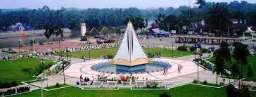

Melayu Tanah Airku

Aku disini
Mencoba lukiskan
Tanah tercinta, tanah melayuku
Negeri membentang di tengah pulau sumatera
Walau ku eja negeri nan kulewati
Melayu jualah nan di jiwa
Ku tahu lima saudagar bugis
Terdampar di lingga
Merangkai biduk di penyengat
Merona di kesunyian kata
Melayu merona kata
Ku tatap lanskap nusantara
Disana, melayu meliuk-liuk memandang
Adat resam di tegakkan
Kalimat syahadat di naungan
Ada pahalam pengikat jiwa
Melayu bersarang jua.
Sajauh-jauh kaki melangkah
Di ranah melayu di hentakkan
Manakala talah tertinggal tanah nusantara
Melayu melekat dalam jiwa
Melayu, tanah airku
dibuek oleh Aldi Pratama